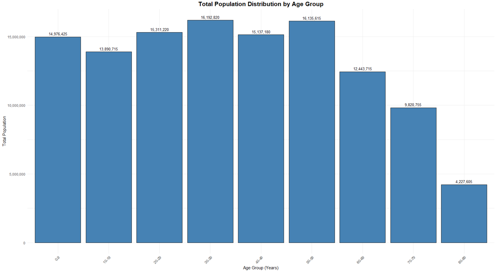
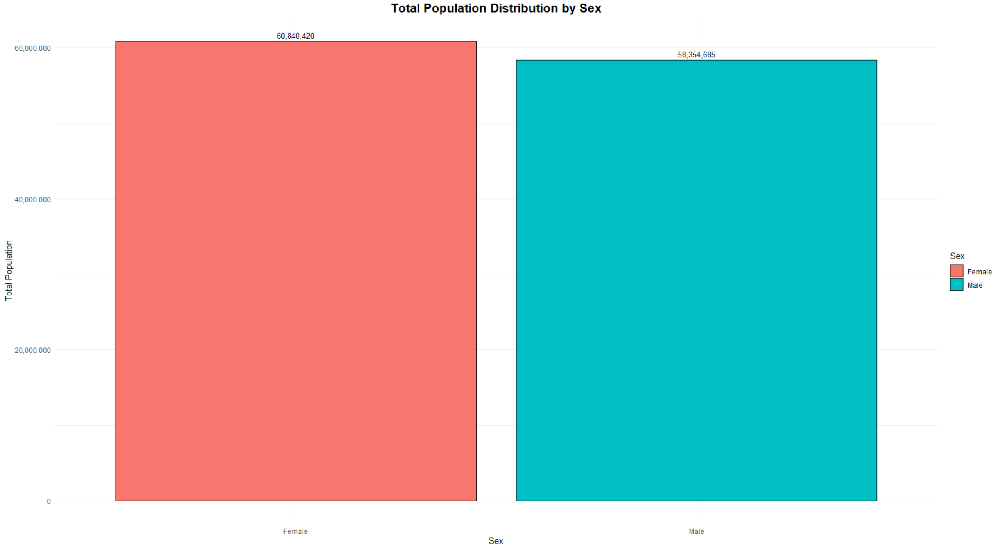
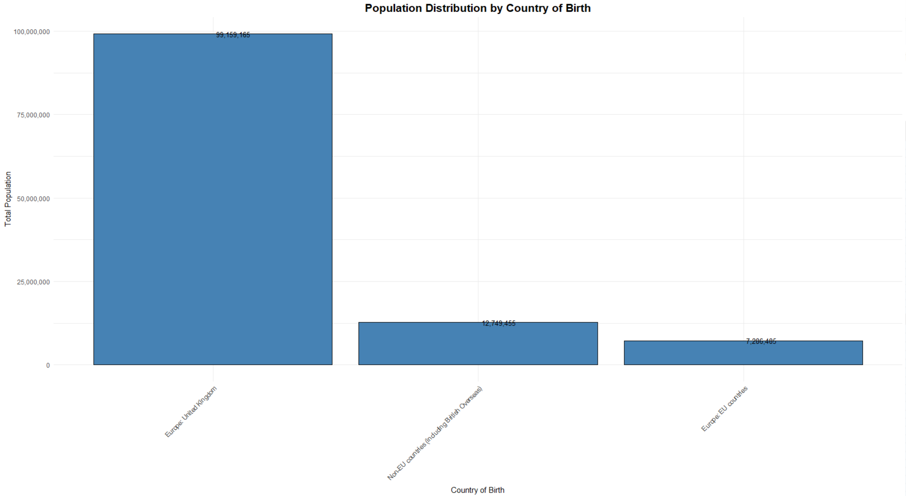
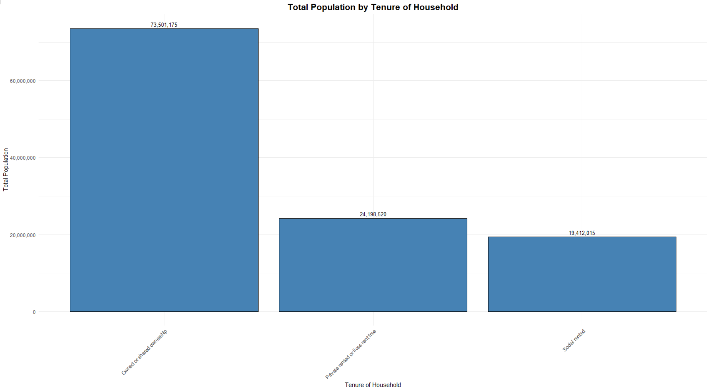
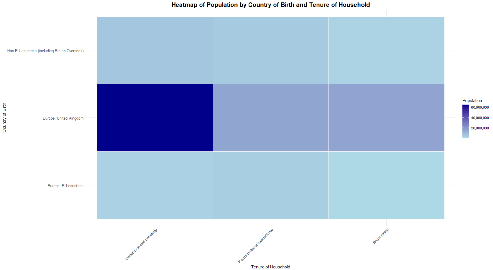
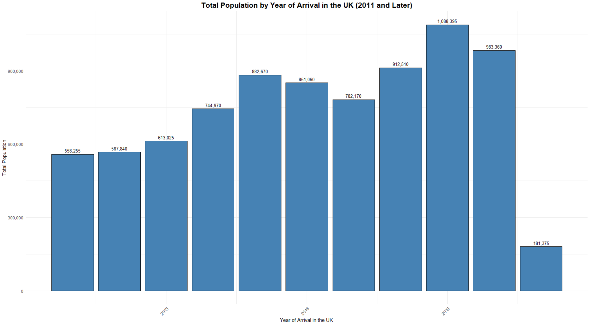
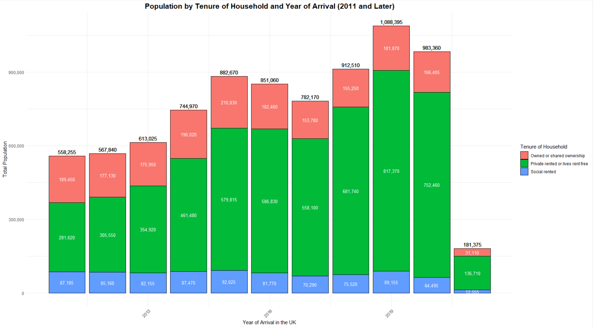
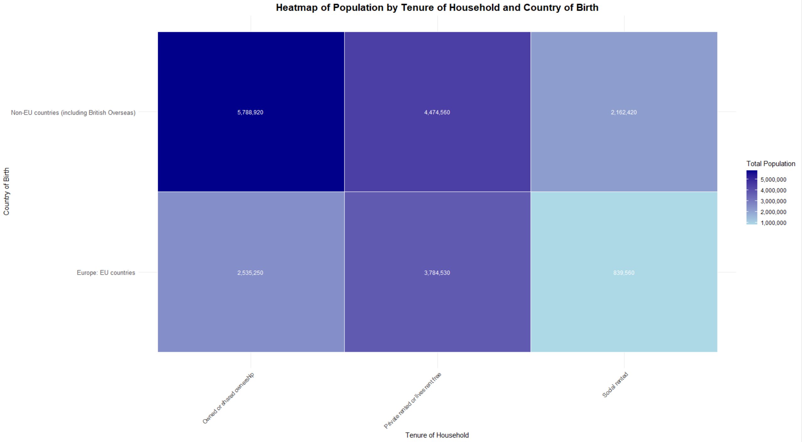
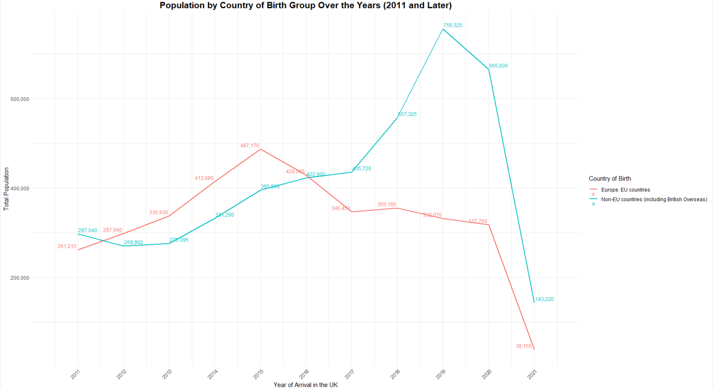

Exploratory Data Analysis of Migration and Housing Trends in England and Wales in R
Download original formatExploratory Data Analysis of Migration and Housing Trends in England and Wales
Background
The Office for National Statistics (ONS) website offers a dataset titled “Social characteristics of international migrants”. This dataset provides an in-depth analysis of the non-UK-born population in England and Wales, detailing aspects such as country of birth, age, sex, housing, family, language, health, qualifications, religion, national identity, and ethnicity. The dataset, which was part of the Census 2021 release, is intended to provide insights into population and migration trends. I selected this dataset for its rich demographic and socio-economic details. This analysis aims to uncover trends, clusters, and outliers.
For more information about the dataset visit the page: https://www.ons.gov.uk/peoplepopulationandcommunity/populationandmigration/internationalmigration/datasets/socialcharacteristicsofinternationalmigrants
| Publication date of dataset Released: 8 September 2023 Rounding Population estimates in the spreadsheet were individually rounded to the nearest 5. Suppression Some shorthand was used in the workbook. Individual estimates suppressed with "[c]" relate to statistics based on a small number of respondents (< 10). Such values have been suppressed on quality grounds and to maintain confidentiality.: Confidentiality ONS as the executive arm of the UK Statistics Authority has a legal obligation not to reveal information collected in confidence in the census about individual people and households. The confidentiality of all census results, including the counts in this release, are protected by a combination of disclosure protection measures. Quality and methodology The Census Quality and Methodology Information report contains important information on: • the uses and users of the census data • the strengths and limitations of the census data • the quality characteristics of the census data • the methods used to produce the census data |
| Definitions |
| Usual resident A usual resident is anyone who on Census Day, 21 March 2021 was in the UK and had stayed or intended to stay in the UK for a period of 12 months or more, or had a permanent UK address and was outside the UK and intended to be outside the UK for less than 12 months. Country of birth The country in which a person was born. The following country of birth classifications are used in this dataset: • Country of birth (3 categories): These categories have been derived from country of birth 12a and include all UK countries in "Europe: United Kingdom", all EU countries in "Europe: EU countries" and all remaining countries including British Overseas Territories in "Non-EU countries (including British Overseas)". •Country of birth (4 categories): These categories have been created from the three categories of country of birth listed above. Wales is separated from the United Kingdom grouping to provide the following four categories: "Europe: Wales", "Europe: United Kingdom (Excluding Wales)", "Europe: EU countries" and "non-EU countries (including British Overseas)". • Country of birth 190a: Individual countries. This classification includes geographical groupings for low volume countries. |
| Year of arrival in the UK |
| The year someone not born in the UK last arrived in the UK. This does not include returning from short visits away from the UK. |
| Tenure of household |
| Whether a household owns or rents the accommodation that it occupies. Tenure of household has been categorised in this analysis using the tenure of household classification 4a. |
| Living arrangements |
| The “living arrangements” classification combines responses to the question on marital and civil partnership status with information about whether or not a person is living in a couple. Living arrangements have been categorised using the living arrangements classification 10a. |
Methodology for Analysis
The dataset was quite comprehensive. I decided to concentrate on three CSV files: sheet1.csv, sheet2.csv, and sheet3.csv. These files contained data on “Usual residents in England and Wales by country of birth group, age, and sex,” “Usual residents in households in England and Wales by country of birth group and tenure of household,” and “non-UK-born usual residents in households in England and Wales by country of birth group, tenure of household, and year of arrival in the UK,” respectively.
The original dataset was a file called mig05intmigsocial.xlsx. I kept the original file untouched and converted the relevant sheets into separate CSV files, naming them sheet1.csv, sheet2.csv, and sheet3.csv for analysis in R.
Before starting the analysis, I cleaned the CSV files by removing irrelevant text to ensure consistency in the data points. This included excluding data from before 2011, as it only provided aggregated data rather than yearly details. Additionally, I ensured the CSV files did not contain any explanatory text by deleting the first three rows of each file and removing any descriptive column headers. Adjustments to column names were handled in my R code to prepare the data for analysis.
SHEET 1: Usual residents in England and Wales by country of birth group, age and sex
Running a summary in R
I used R's read.csv() function to load each of the CSV files (sheet1.csv, sheet2.csv, and sheet3.csv) from my system. For each file, I began by examining the structure of the dataset with the str() function, which provided information about the number of rows and columns, data types, and sample values. Using the summary() function, I generated a statistical summary for each dataset, including metrics like minimum, maximum, mean, median, and quartiles for numeric columns like the count column. A preview of the first six rows of each file was obtained using the head() function to confirm the data was loaded correctly.
This was the result of the summary of the first sheet.
The count column has a range from 15 (minimum) to 359,840 (maximum), with a median of 17,305 and a mean of 72,769. The data is highly skewed, with a small number of categories having very high counts.
Other columns, such as Area Code, UK Country, and Country of Birth, contain categorical data and provide demographic context.
SHEET 1 Analysis
Figure 1:

I grouped the chart by ages of 10 because the individual ages were too much data to visualize at once. The chart shows the distribution of the total population across various age groups. The age groups of 20-29 and 30-39 are highly populated with over 31 million combines highlighting these groups as key contributors to the workforce and economy. The younger age group (0-9) has a substantial population of 14.9 million, indicating a stable birth rate. A steady distribution is seen among the middle-aged cohorts, ranging from 13.8 million to 15.3 million across the 10-19 to 50-59 age groups. However, a noticeable decline begins in the 60-69 age group, suggesting early signs of population aging and also meaning the average life expectancy would be around late 50s. This decline becomes more pronounced in the older age groups, with the 70-79 and 80-89 cohorts dropping to 9.8 million and 4.2 million, respectively, consistent with increased mortality rates in advanced age. Overall, the population is concentrated in younger and middle-aged groups, while the decline in older populations highlights the potential need for policies addressing aging demographics and their impact on healthcare and social systems.
Figure 2:

The chart presents the total population distribution by sex, comparing the number of males and females in the dataset. The female population is slightly higher, totalling approximately 60.8 million, compared to the male population of 58.4 million. This difference, though marginal, suggests a slight gender imbalance favoring females, which is consistent with typical demographic trends where females tend to outnumber males due to factors such as higher life expectancy. Overall, the population is relatively evenly split between the two sexes, which indicates balanced representation and minimal gender disparity within the dataset.
Figure 3:

The chart illustrates the population distribution by country of birth. It shows that overwhelmingly majority of the population, approximately 99.2 million, was born in the United Kingdom, reflecting the substantial representation of native-born residents. In contrast, individuals born in non-EU countries, including British Overseas Territories, constitute a significant minority, totalling around 12.7 million. Residents born in EU countries account for 7.3 million, making up the smallest proportion among the categories presented. This distribution highlights the prominence of UK-born residents while also reflecting the diversity introduced by international migration, particularly from non-EU countries.
SHEET 2 - Usual residents in households in England and Wales by country of birth group and tenure of household
Running a Summary in R
For sheet2.csv, I converted the count column to numeric format using the gsub() and as.numeric() functions to remove commas and ensure proper formatting for analysis. The structure of the dataset was then rechecked using the str() function to confirm all columns were formatted correctly. A statistical summary was generated with the summary() function.
The dataset from the second sheet of the file ukdataedited.xlsx was successfully loaded and inspected. The dataset contains five columns: Area Code [Note 1], UK Country, Country of Birth [Note 2a], Tenure of Household [Note 4], and count. Using the str() function, it was confirmed that the dataset has 27 rows and five columns. Summary statistics for the count column revealed a minimum value of 413,928, a maximum of 32,588,500, a median of 12,676,630, and a mean of approximately 14,334,741, along with interquartile range values indicating population distribution across various tenure and country-of-birth categories
SHEET 2 Analysis
Figure 4:

The chart shows the total population distribution in England and Wales by the tenure of household. Among the categories, households that are owned or shared have the largest population, comprising approximately 73.5 million individuals. This shows the prevalence of homeownership as the dominant form of tenure in the region. In contrast, private rented or rent-free households account for 24.2 million, while social rented households constitute 19.4 million. The significantly higher population in owned or shared households indicates a strong cultural or economic inclination toward homeownership.
Figure 5:

The heatmap visualizes the population distribution by country of birth and tenure of household. The darkest segment represents the largest population, which consists of individuals born in the United Kingdom residing in owned or shared households, reflecting a strong preference for homeownership among native-born residents. Lighter shades indicate smaller populations, such as individuals from non-EU countries and EU countries residing in private rented or socially rented accommodations. This pattern suggests that international migrants, particularly those from non-EU countries, are more likely to occupy rental housing compared to UK-born individuals. The visualization highlights the relationship between housing tenure and country of birth, providing valuable insights into demographic trends and housing preferences across different population groups.
SHEET 3 - Non-UK-born usual residents in households in England and Wales by country of birth group, tenure of household and year of arrival in UK
Running a Summary in R
Similarly, for sheet3.csv, I used the head() function to preview the data and verify it was loaded correctly. The count column, initially stored as text with commas (e.g., "1,000"), was cleaned using the gsub() function to remove commas and then converted to numeric format with as.numeric(). The structure of the dataset was examined again using the str() function, and summary statistics were calculated using the summary() function.
The dataset consists of six columns, including Area Code [Note 1], UK Country, Country of Birth [Note 2a], Tenure of Household [Note 4], Year of Arrival in UK [Note 5b], and count. A warning about missing values (NAs) was noted during this process, meaning their issues with certain entries. The dataset structure was checked with the str() function, confirming 234 rows and six columns, with most columns as character type and the count column successfully converted to numeric. Summary statistics revealed the count column has a range from 50 to 2,313,310, with a median of 23,350, and a mean of 91,094, alongside 19 missing values. These preparatory steps ensure the data is clean and ready for further exploration, addressing population distribution trends by country of birth, household tenure, and year of arrival in the UK.
SHEET 3 Analysis
Figure 6:

I excluded the column for those prior to 2011, because it was a summation of years past and did not provide a yearly breakdown. The chart shows the total population in England and Wales by the year of arrival in the UK (2011 and later). The population steadily increased from 558,255 in 2011 to a peak of 1,088,395 in 2019, reflecting a significant influx of migrants during this period. I observed a sharp decline after 2019, with the population dropping to 181,375, likely due to travel restrictions and migration limitations caused by the COVID-19 pandemic and related policies. This visualization highlights the temporal trends in migration to the UK, with a notable peak in the late-2010s followed by a steep decline in recent years.
Figure 7:

The chart displays the population by tenure of household and year of arrival in the UK (2011 and later. The population composition is segmented into three housing tenures: "Owned or shared ownership," "Private rented or lives rent-free," and "Social rented." Across all years, "Private rented or lives rent-free" consistently represents the largest share of housing tenure, peaking at 817,370 in 2019. This tenure category is particularly prominent among more recent arrivals, reflecting the transitional nature of housing for new migrants. "Owned or shared ownership" accounts for a smaller proportion, reaching its highest value of 210,830 in 2015, indicating that home ownership may be less accessible for newer migrants. The "Social rented" category remains the smallest, peaking at 92,025 in 2018. The overall population trends align with the total migration peaks observed, with the largest influx occurring between 2019 and 2021, followed by a decline in recent years, likely influenced by external factors such as the COVID-19 pandemic.
Figure 8:

The heatmap visualizes the population distribution in England and Wales by tenure of household and country of birth. The "non-EU countries (including British Overseas)" group dominates the distribution, particularly in "Private rented or lives rent free" households, with a population of 5,788,920, followed by 4,474,560 in "Owned or shared ownership" households. In contrast, the "Europe: EU countries" group shows the highest population in "Private rented or lives rent free" households at 3,784,530, with significantly smaller proportions in "Owned or shared ownership" (2,535,250) and "Social rented" (839,560) categories. This highlights the reliance on private renting among EU-born and non-EU-born residents, likely due to economic or integration-related factors.
Figure 10:

The chart shows the population trends by country of birth group (Europe: EU countries and non-EU countries, including British Overseas Territories) for migrants arriving in the UK from 2011 onward. The population from EU countries shows a steady increase from 261,215 in 2011, peaking at 487,170 in 2015, before declining consistently to just 38,155 in 2021. This trend aligns with key political events such as Brexit, which likely influenced migration patterns and reduced arrivals from the EU in recent years. In contrast, the population from non-EU countries experienced a rapid rise, starting at 297,040 in 2011 and peaking at 756,325 in 2016, before gradually declining to 143,220 in 2021. The sharp decline after 2019 for both groups may also reflect the impact of the COVID-19 pandemic, which restricted global movement. Overall, the chart highlights distinct migration patterns between EU and non-EU countries, with non-EU migration consistently higher in recent years, reflecting evolving immigration policies and global events influencing migration to the UK.
Ethical Issues
When conducting this analysis, several ethical considerations must be addressed to ensure the responsible use of the data. First, privacy concerns are paramount, as even aggregated data can potentially lead to the identification of individuals, particularly when analyzing sensitive details such as year of arrival, tenure type, or country of birth. It is essential to verify that no personally identifiable information (PII) exists within the dataset and that anonymity is preserved. It must also be ensured that individuals were aware of how their data would be used, especially if this data is being repurposed for a secondary analysis. Any lack of clarity regarding permissions raises concerns about the ethical use of the dataset.
Another important aspect is addressing bias in the data collection process. Sampling biases or underrepresentation of specific groups could lead to skewed results. Researchers must strive for equity in representation and avoid reinforcing stereotypes.
Additionally, findings from the analysis should be communicated responsibly to prevent misinterpretation or misuse, particularly in contexts where the results might influence policy decisions or public perceptions.
Transparency in reporting methodologies, data cleaning processes, and limitations is also crucial to ensure the integrity of the research.
Finding & Features of the Data
Exploratory data analysis of the dataset reveals several intriguing findings. Migration patterns suggest that non-EU migration to the UK steadily increased until around 2016, potentially driven by global political or economic factors, whereas EU migration peaked in 2015 and began to decline, possibly due to the Brexit referendum and its aftermath. A sharp drop in both EU and non-EU migration after 2019 strongly suggests the impact of the COVID-19 pandemic and related restrictions. Trends in housing tenure reveal that the majority of migrants, particularly those from non-EU countries, are more likely to reside in "Private rented or lives rent free" housing, while EU migrants exhibit similar patterns but in smaller overall numbers. Non-EU migrants consistently outnumber EU migrants in more recent years, with their population peaking higher and declining more gradually.
Clusters and groupings are evident, with migrants arriving in earlier years (2011–2015) forming larger population groups across all tenure types, while those arriving post-2019 are clustered in smaller populations. Outliers and exceptions include the sharp drop in migration numbers in 2021, which contrasts with the steady trends observed before the pandemic. Additionally, the proportion of EU migrants residing in owned or shared housing is much lower compared to non-EU migrants.
Unusual features include the dominance of private renting among migrants, regardless of country of birth, suggesting that homeownership is a challenge for most new arrivals, likely due to affordability or the transitional nature of migration. Social renting remains consistently the smallest category, which indicates there could either be limited access or lack of availability. The relationship between country of birth and housing tenure may highlight systemic differences in economic opportunities, housing access, or integration support available to EU versus non-EU migrants. The steep decline in EU migration post-Brexit emphasizes the influence of immigration policy changes on specific groups. Overall, EDA reveals strong temporal trends, distinct housing tenure patterns, and the profound impact of global events like Brexit and COVID-19 on migration to the UK.